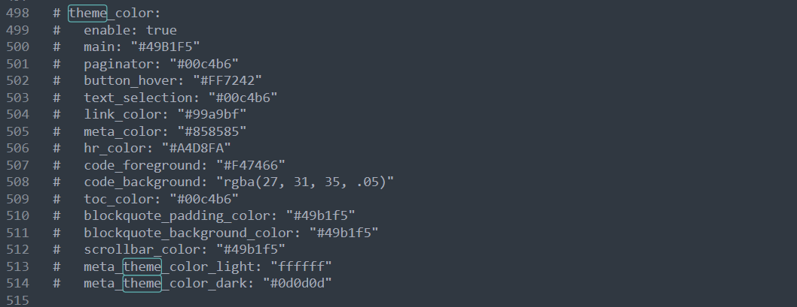
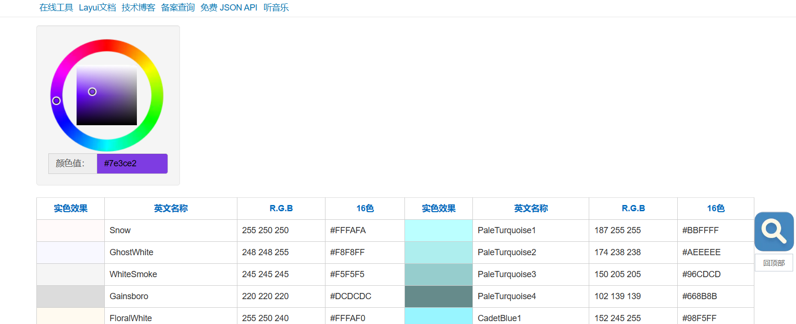
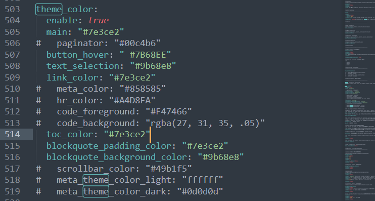

搭建Hexo博客网站(二)-div容器边框样式美化
阅读本文前，还可以阅读这些文章哦:
更多问题可以参考 官方文档
前言
默认的 butterfly 主题使用的 main 颜色是 #49B1F5，这是一种浅蓝色的色调

而站长更喜欢紫色的色调，这个时候我们应该如何来修改 butterfly 的配置来使一些插件、按钮展示我们喜欢的颜色呢？
配置文件
我们找到 butterfly 的主题配置文件 _config.butterfly.yml 文件。然后定位到 theme_color 配置项
解释一下各个配置项的意思
| 参数 | 描述 |
|---|---|
| enable | 是否启用主题颜色设置 |
| main | 主题的主要颜色，这里是蓝色(#49B1F5) |
| paginator | 分页器颜色 |
| button_hover | 鼠标悬停在按钮上时的颜色 |
| text_selection | 文本选择时的颜色 |
| link_color | 链接颜色 |
| meta_color | 元数据颜色 |
| hr_color | 水平线颜色 |
| code_foreground | 代码前景色 |
| code_background | 代码背景色 |
| toc_color | 目录颜色 |
| blockquote_padding_color | 引用块边框颜色 |
| blockquote_background_color | 引用块背景颜色 |
| scrollbar_color | 滚动条颜色 |
| meta_theme_color_light | 元数据主题颜色 - 浅色模式 |
| meta_theme_color_dark | 元数据主题颜色 - 深色模式 |
站长根据自己的喜好配置了紫色主题，可以在在线网上选择自己感兴趣的颜色，比如 sojson
然后修改 _config.butterfly.yml 的配置项
效果如下

CSS
除了修改主题的样式，容器的边框颜色、日夜切换时的颜色变换又该是如何的呢？这里就需要修改主题的 css 或者添加自定义的 css 文件了。推荐使用自己的 css 文件，因为可以统一整合，另外又比较易于维护代码，方便后期进行新的修改。具体操作是，在博客根目录/source/ 下创建 /css文件夹，然后添加一个 page.css 文件。在文件中写入自定义的 css 样式。

.layout > div:first-child:not(.recent-posts),
#recent-posts > .recent-post-item,
#aside-content .card-widget,
.layout > .recent-posts .pagination > *:not(.space) {
/* 第四个参数表示透明度，越小越透明 */
background: rgba(239,239,239,0.95);
}
}
[data-theme="dark"]
#aside-content .card-widget{
background: rgba(0, 0, 0, 0.5)!important;
}
[data-theme="dark"] /*div#post 这是个文章页的区块*/
div#post{
background: rgba(0, 0, 0, 0.5)!important;
border: 1px solid #9b68e8; /* 设置边框为2像素宽度，实线样式，颜色为紫色 */
}
[data-theme="dark"] /*这个是侧边栏卡片*/
div.card-widget{
background: rgba(0, 0, 0, 0.5)!important;
border: 1px solid #9b68e8; /* 设置边框为2像素宽度，实线样式，颜色为紫色 */
}
[data-theme="light"]
div#post{
border: 1px solid #808080; /* 设置边框为2像素宽度，实线样式，颜色为紫色 */
}
[data-theme="light"]
div.card-widget{
border: 1px solid #808080; /* 设置边框为2像素宽度，实线样式，颜色为紫色 */
}
[data-theme="dark"] /*这是设置主页文章区块的边框线条*/
div.recent-post-item{
background: rgba(0, 0, 0, 0.5)!important;
border: 1px solid #9b68e8; /* 设置边框为2像素宽度，实线样式，颜色为紫色 */
}
[data-theme="light"]
div.recent-post-item{
border: 1px solid #808080; /* 设置边框为2像素宽度，实线样式，颜色为紫色 */
}另外还需要记得在 _config.butterfly.yml 文件中配置 inject 添加我们的 css
# 插入代码到头部 </head> 之前 和 底部 </body> 之前
inject:
head:
# - <link rel="stylesheet" href="/xxx.css">
- <link rel="stylesheet" href="/css/page.css">完成配置后，重新启动服务
hexo s可以实现容器边框的线条颜色变化了

本博客所有文章除特别声明外，均采用 CC BY-NC-SA 4.0 许可协议。转载请注明来自 Egstar站长！
 wechat
wechat alipay
alipay
相关推荐


评论